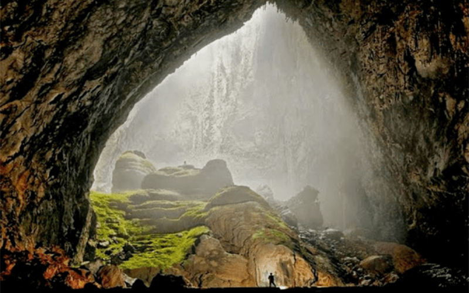
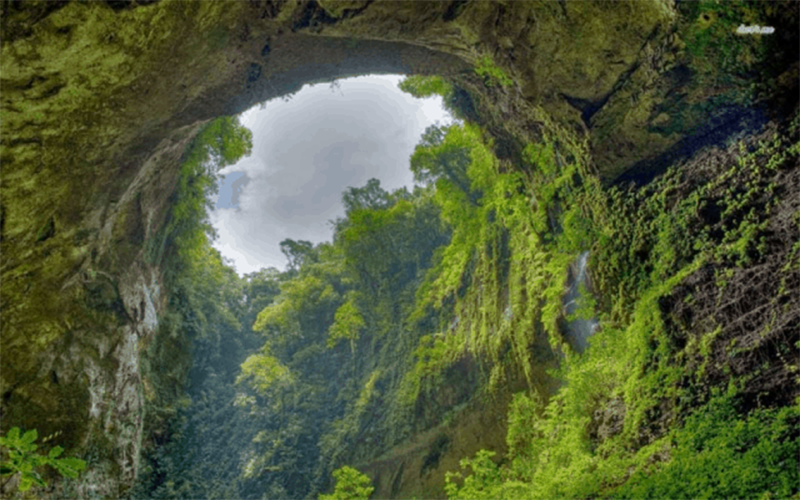
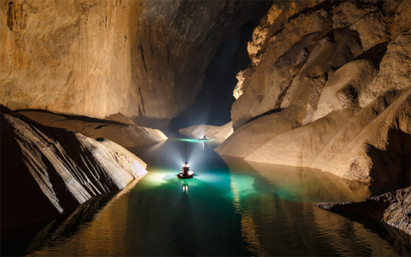
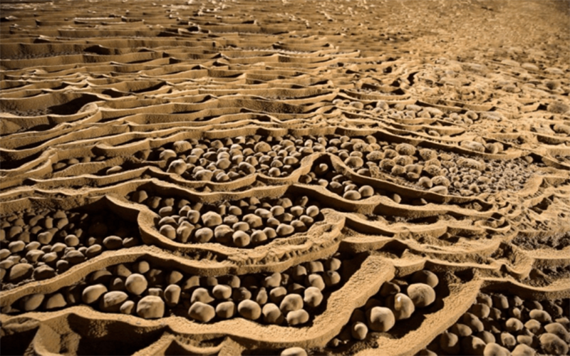

Ngỡ ngàng trước vẻ đẹp ngoạn mục 'không thể tin' của Sơn Đoòng - Hang động lớn nhất thế giới
Được hình thành cách đây hàng triệu năm nhưng mới được công bố và phát hiện gần đây, Hang Sơn Đoòng là hang động lớn nhất, đẹp nhất trên thế giới và là một điếm đến không thể bỏ qua cho bất kì du khách nào đam mê du lịch mạo hiểm trên thế giới.
Giới thiệu về hang Sơn Đoòng
Nằm trong trung tâm của quần thể di tích vườn Quốc gia Phong Nha - Kẻ Bàng, với chiều dài trải dài hơn 5km, chiều rộng hơn 200m, chiều cao lên đến 150m và được ước tính hoàn toàn có thể “nhét vào” được một toà nhà chọc trời khoảng 40 tầng, hang Sơn Đoòng hay còn được gọi là Sơn Động) là hang động tự nhiên lớn nhất thế giới và là một niềm tự hào của người dân Việt Nam nói chung và người dân Quảng Bình nói riêng khi được thiên nhiên ưu ái ban tặng một kiệt tác vô giá của nhân loại. Chính vì sự hùng vĩ và độ sộ này, người ta vẫn hay ví Sơn Đoòng như là “Vạn lý trường thành” của Việt Nam.
Khám phá vẻ đẹp “bí ẩn” hang Sơn Đoòng
Để đến được với hang Sơn Đoòng, bạn sẽ phải mất khoảng nửa ngày để đi qua một khu rừng và lội qua một con sông nhỏ.

Đến được cửa hang, từng luồng gió lạnh thổi trong hang sẽ làm tan biến bao mệt mỏi của quãng đường “băng rừng lội suối” gian nan. Không chỉ ngỡ ngàng trước không gian rộng lớn của hang, bạn sẽ cảm thấy vô cùng phấn khích bởi sự bí ẩn diệu kỳ ẩn sau những làn sương mù dày huyền ảo trong những cơn gió lạnh.
Không chỉ nổi tiếng với kích thước khổng lồ, hang Sơn Đoòng còn có một hệ sinh thái động, thực vật phong phú. Sơn Đoòng là nơi trú ngụ của nhiều loài động vật và cũng là một thảm thực vật đa dạng với hàng trăm loài thực vật khác nhau, được tạo nên bởi dòng sông ngầm chảy xiết dưới lòng đất và được những ánh mặt trời của một phần hang bị sập chiếu vào.
Người ta còn phát thiện được cả một thảm thực vật nguyên sơ chưa có vết chân người trên một cánh rừng nhiệt đới nguyên sinh rộng lớn tựa như một "vườn địa đàng" có thực nơi trần gian.
Hang Sơn Đoòng hấp dẫn du khách bởi sự đa dạng trong địa chất trong địa hình đặc biệt của những dòng sông ngầm và những hang động rộng lớn. Khám phá hang Sơn Đoòng, bạn sẽ được chiêm ngưỡng hệ thống đá vôi, nhũ đá, “ngọc trai” khổng lồ và những cột đá măng lên đến 70m được kiến tạo từ hàng triệu năm trước
Với mục đích bảo tồn và gìn giữ vẻ đẹp của hang động cũng như đảm bảo đảm an toàn cho khách thăm quan, hang Sơn Đoòng chưa mở cửa đón khách du lịch một cách đại trà mà chỉ có khoảng 500 người được tham gia vào hành trình thám hiểm mỗi năm. Muốn lên đường và trở thành một trong ít người được khám phá hang động kỳ vĩ này, bạn sẽ phải đặt trước tour thám hiểm hang Sơn Đoòng với chi phí khá đắt và cũng như chuẩn bị một thể lực tốt để đảm bảo sức khoẻ cho chuyến đi khám phá Sơn Đoòng dài ngày.
Nếu là người đam mê du lịch mạo hiểm, thám hiểm hang động, hãy một lần trải nghiệm thám hiểm Sơn Đoòng để chinh phục, thử thách bản thân và được chứng kiến một kiệt tác thiên nhiên hùng vĩ và kì diệu nhất hành tinh này.